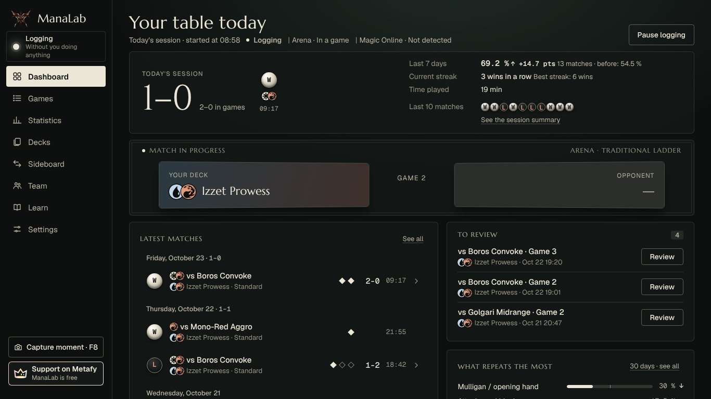
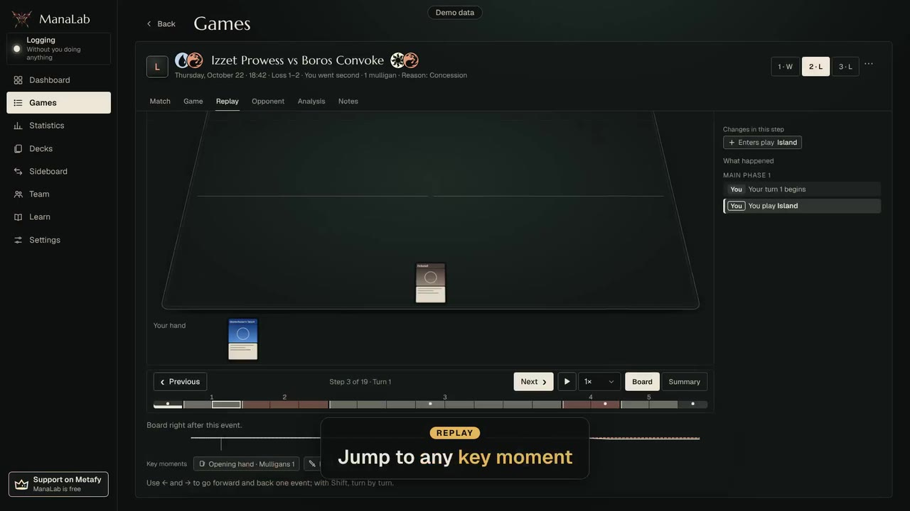
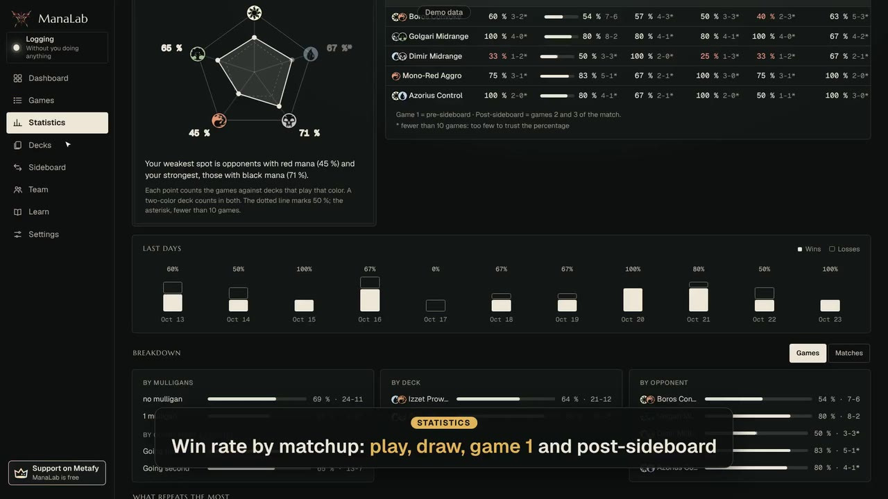

ManaLab Guide
What each part of the app does and how to use it, for Arena and Magic Online. Focus on the main features and the AI coach.
What ManaLab is
ManaLab saves every match you play in MTG Arena and Magic Online (MTGO) on your PC and shows what works: your win rates by deck, by opponent and by matchup, your mulligans, your mistakes and your sideboard changes.
The app is free. The only paid part is the AI loss analysis: $6 per month, with a free trial.
First steps
- Download the portable version (ZIP), extract it and open ManaLab. No installation needed. To upgrade later, extract the new version over the old folder: your data is kept.
- In Arena, go to Options › Account and turn on «Detailed Logs (Plugin Support)». Then restart Arena. Without this ManaLab cannot read your Arena matches. Magic Online needs no setting.
- The first time, the start guide opens. You can open it again from Settings › Data and about ManaLab, with «Show the getting-started guide».
- ManaLab starts logging by itself when it opens (you can change that in Settings › Games). From then on every match, in Arena and Magic Online, is saved automatically. The box under the ManaLab name in the sidebar says «Logging».
- Play in windowed or borderless mode: the overlay cannot be seen in exclusive full screen.
Requirements: Windows 10 or 11, and Arena, Magic Online or both.
Magic Online
ManaLab records MTGO the way it records Arena, and there is nothing to set up: no «Detailed Logs» and no settings. With ManaLab logging, open Magic Online and ManaLab picks it up by itself. The Magic Online state in the Dashboard's top line says «Not detected» until it finds the game, and from then on it follows your games like Arena's.
It records every format: your opening hands and mulligans, whether you went first or second, your deck, the cards your opponent shows, life totals, the replay and the timeline. Your deck takes the name you saved it with in Magic Online when the list matches exactly, otherwise it is named by its colors; a name you type yourself in Decks is never replaced.
- Overlay: the cards left in your deck and the ones your opponent has shown, over Magic Online (see Overlay).
- Screenshots: the opening hand, each mulligan and the result, plus «Capture moment». They have their own switch in Settings › Games: «Take screenshots in Magic Online».
- Importing: in Games, press «⋯» › «Import games», choose «Arena or Magic Online log» and pick an
mtgo.logto bring in games you played with ManaLab closed. They count as yours, and games you already have are not duplicated. - Log location: Settings › Games › «mtgo.log file». Leave it on «Default» unless Magic Online saves its log in another folder.
What is different in MTGO
- Phases and tapped cards are worked out. Magic Online does not send them, so ManaLab deduces them from the log alone. In the replay, anything deduced is marked ≈, because it may not be exact.
- Tokens and emblems (Treasure, Blood, Map…) appear only in the replay. They are not listed in the opponent's cards, in your deck lists or in the overlay.
- The overlay can show less than in Arena when the log has no table state.
- The sideboard: Magic Online does not say which deck you play in games 2 and 3 until the game starts, so ManaLab asks you (next section).
More on the website: Magic Online tracker: what it saves and how it works.
Sideboard in Magic Online
After a game, Magic Online's log repeats your original list, even if you sideboarded. The real list only arrives when the next game starts. So, when sideboarding begins, a small panel «Sideboard · Game N» appears over Magic Online. It never takes focus away from the game and closes by itself when the next game starts. It has three buttons:
- «Use this change» repeats what you did last time against the same opponent deck. It only appears when there is a last time.
- «No changes» keeps your base list.
- «Edit» opens ManaLab with your main deck and sideboard side by side: − moves a copy out, + brings one in, and you can search for a card. The In and Out counter warns you if they do not match, but you can still confirm.
If you ignore the panel, the list stays unconfirmed. The overlay then shows «Unconfirmed list», approximate probabilities starting with ≈ and «≥ N cards out (unidentified)»: ManaLab knows how many cards left your deck, not which ones. Fix it with «Fix sideboard» in the sidebar, during the game or between games. Whatever you choose, the real list from the log always wins as soon as Magic Online sends it.
You can also fix it after the game: in Games, open the game, go to the Game tab and press «Fix sideboard». It is offered for your own Magic Online games, from game 2 on, whose list was not confirmed. Later unconfirmed games of that match are recalculated from your correction, and the game then counts as confirmed in the statistics, the sideboard guide and the AI analysis.
A game that was never confirmed shows «Sideboard not confirmed» in its Game tab. The sideboard guide does not count its changes, and the AI analysis is told they are unknown, not that there were none.
From game 2 on, the Game tab shows what you sideboarded in and out compared with your original list (game 1), under «Compared with the original list». If you are back to the original list, nothing is shown. To turn the panel off, use «Ask about my sideboard changes (Magic Online)» in Settings › Overlay; «Fix sideboard» stays available.
Dashboard: your table today
The Dashboard is titled «Your table today» and tells you whether ManaLab is logging correctly. Under the title, one line shows «Logging» (or «Paused») and the state of each game: Arena and Magic Online each say «Listening», «In a game», «Not detected» or «Stopped». The button at the top right is «Pause logging»; while logging is paused, a bar warns you that games you play now won't be saved, and «Resume» turns it back on. Below you see:
- Today's session: your score today in matches and in games, one column per match and, on the right, your last 7 days (win rate compared with the 7 days before), current streak, time played and last 10 matches. «See the session summary» opens the full summary.
- Match in progress: while you play, your deck and the game number; when the match ends it becomes «Last match», with the result, both decks and the buttons «Watch the replay», «Mark what went wrong» and, after a loss, «Analyse with AI».
- Latest matches: your most recent matches by day (click one to see its games); «See all» opens Games.
- To review: your recent losses with no mistakes marked and no notes yet, each with a «Review» button.
- What repeats the most: the mistakes you tag most often, over 30 days; «30 days · see all» opens them in Statistics.
- Activity: the last thing ManaLab did, with «View log» for the full log.
Until you have your first game, you see «Set up the table», with the steps to get ready, instead of these cards. If a new version is out, a notice appears at the top. The sidebar also has «Capture moment» during a game.

Games: your history
This is your full match history, by day and with the opponent up front. At the top right, a search box finds an opponent, a deck or an event, and «All», «Wins» and «Losses» filter by result; below the title you have the Deck filter and, when you have games in more than one format, the Format filter. Each row is a match, with its result, the opponent's deck, yours, its games and the score. Click a match to see its duel on the right, with «Open the game» and «Watch the replay», and to unfold its games, which show whether you went first or second.
The «⋯» button («More Games options») has «Prepare session» and «Import games». Every game shows its format; if ManaLab could not read it, or you want to change it, use «Set the format…» in the «⋯» menu of the game.
When you open a game you get these tabs («Back» returns to the list):
- Match: the match summary and its games.
- Game: opening hand, whether you went first or second, mulligans, what you sideboarded in and out, and your screenshots.
- Replay: the game step by step, turn by turn, with a Summary view. In Magic Online, deduced steps are marked ≈ and tokens appear only here.
- Opponent: the opponent cards you have seen and their detected archetype.
- Analysis: the AI explanation (subscribers and free trial).
- Notes: your mistakes and your notes.


Video on the web: https://manalab.es/guia/guia_manalab_en.html#video-replay

Video on the web: https://manalab.es/guia/guia_manalab_en.html#video-opening-hand-mulligans

Video on the web: https://manalab.es/guia/guia_manalab_en.html#video-opponent
Importing games
In Games, «⋯» › «Import games» brings in games from two places: a .manalab file someone sends you (created by «Export game» in the «⋯» menu of each game) or an Arena or Magic Online log: a Player.log from Arena or an mtgo.log from Magic Online, with games you played while ManaLab was closed or on another PC.
You choose which games to import, and the ones you already have are marked, so nothing is duplicated. Imported games have replay, hands, mulligans, deck, notes and coach tags, but no screenshots or AI analysis.
Another player's games carry their mark and never count in your statistics, trends, reports or team. Games you import from your own log do count as yours.

Video on the web: https://manalab.es/guia/guia_manalab_en.html#video-import-games
Screenshots and highlights
ManaLab takes screenshots on its own: the opening hand, each mulligan and the result. You can turn them off in Settings › Games, with one switch for Arena and another for Magic Online.
You can also save a screenshot of any moment you want, in Arena and in Magic Online. This is a highlight, and it works even if automatic screenshots are turned off.
- Press F8 (you can change the key in Settings › Games, under «Screenshots and highlights»).
- Or press the «Capture moment» button over the game.
- Or press «Capture moment» in ManaLab's sidebar.
The buttons only appear while a game is in progress.
Afterwards, in the Game tab, open the screenshot and write a note about that moment.

Video on the web: https://manalab.es/guia/guia_manalab_en.html#video-capture-moment
Notes and mistakes
In the Notes tab of each game you can mark the mistakes you made (with tags) and write anything you want to remember. These mistakes feed the report you can send to your coach and the repeated-mistake statistics.
Decks
This page lists the decks ManaLab has found in your games. From here you can:
- Rename a deck, or go back to the name Arena uses with «Use Arena name». In Magic Online a deck takes the name you saved it with when its list matches exactly; otherwise ManaLab names it by its colors.
- Choose a variant when a deck has more than one list, and see the statistics of each card.
- Check your matches and win rate with the deck. Decks counts matches, not single games, and unfinished matches are not counted.
To check your games again against the latest meta decks, go to Settings › Cards and language.
Statistics: your win rates
The «How you're doing» screen has a period selector at the top, «7 days», «30 days», «90 days», «All» or «Since…» (you pick a start date), and two filters, Format (it only appears when you have games in more than one format) and Deck. Each game keeps its real format, so you can look at one format at a time. The period you choose is remembered. You see:
- Your win rate in matches and in games, each compared with the previous period of the same length, plus your last 10 matches and your current streak. «View your card of the month» opens your card of the month.
- «Against each color»: a wheel with your win rate against opponents who play each color.
- «Against each deck»: the matchup table, which shows which decks you win against and which you lose against, with Game 1 and post-sideboard results. An asterisk (*) means fewer than 10 games.
- «Last days»: a chart of your wins and losses by day.
- «Breakdown»: by mulligans, by going first / second, by deck and by opponent, counted in games or in matches.
- «What repeats the most»: the mistakes you tagged, over 30 days, 90 days or all history, and «Marked mistakes».
The opponent's deck is named by comparing its cards with the most played meta decks of the game's format, updated every 3 days (Settings › Cards and language). If nothing clearly matches, it is named by its colors.
The «⋯» menu has «HTML report» and «Export for my coach».


Video on the web: https://manalab.es/guia/guia_manalab_en.html#video-statistics
Sideboard: your plan per matchup
Choose your deck and your opponent. ManaLab shows your results in that matchup (all games, Game 1, post-sideboard, going first and going second) and suggests what to take out and bring in, each with a confidence label, based on your own games.
For each matchup you can note what you bring in (In) and what you take out (Out), and write your plan (My plan). It saves itself and appears in the coach report. Lower down you see the changes you have made and how each of your cards performs. In Magic Online, games whose sideboard was never confirmed are not counted.
With a subscription, «Ask the AI for a plan» suggests a sideboard plan based on your games in that matchup.

Video on the web: https://manalab.es/guia/guia_manalab_en.html#video-sideboard-guide
Overlay: your deck over the game
The overlay is two panels over the game window, in Arena and in Magic Online. My panel shows the cards left in your library, the chance to draw each one and a Lands row. The opponent's panel shows the cards they have played or revealed, and how many copies you have seen. It only shows public information or what can be worked out from what has been played.
It appears while the game is the active window, in windowed or borderless mode (not in exclusive full screen). If the Dashboard says «Window not detected», open the game in windowed or borderless mode. In Settings › Overlay you can set:
- «Show the overlay» (on by default) and «Try it over Arena», which shows it for 10 seconds.
- The layout (full, compact or minimalist), the colors (with a colorblind palette) and high contrast.
- Its size, opacity and position.
- When it is shown: always, or only when the mouse is over a zone.
- What to show in each panel, with a switch for every element.
Lands list: move the mouse over the «Lands» row of My panel and a list opens with each land you have left, its copies out of the total and the chance of drawing it next. It works the same in Arena and Magic Online. You can switch it in Settings › Overlay › What to show › My panel: «Lands list on hover over “Lands”» (on by default; it needs the Lands row).
In Magic Online, when the log has table lines, ManaLab works out your hand and your library and shows their probabilities. When it has none, the overlay shows only the deck list, with copies left and total copies: no hand, no library count and no draw chance. It never shows made-up numbers. After a sideboard it can show «Unconfirmed list», probabilities with ≈ and «≥ N cards out (unidentified)» (see Sideboard in Magic Online).

Video on the web: https://manalab.es/guia/guia_manalab_en.html#video-in-game-overlay
AI coach: loss analysis
The AI coach explains what went wrong in a loss and what to try next time. It is the only paid part of ManaLab: $6 per month. You can try it for free first.
- Subscribe on Metafy (the «Subscribe on Metafy» button in Settings › Team and AI or in the Analysis tab). You will receive a code by email.
- Go to Settings › Team and AI, paste the code into «Subscription code» and press «Check».
- Open a loss in Games and go to the Analysis tab.
- If you want, write a specific question, for example: «Should I have mulliganed?» or «Did I attack badly on turn 5?».
- Press «Analyse with AI». It takes a few seconds. The answer is saved, so you never pay twice for the same game.
Free trial: press «Ask for a free trial» (in Settings › Team and AI or in the Analysis tab). It opens your email program with a ready message. Send it and we reply with a code for 5 analyses, valid for 30 days. No card or account is needed. You enter the code as above.
Each code has a daily limit, and the tab shows how many analyses you have left. Only your own games can be analysed, not imported ones.
Only the data of the game you analyse is sent: your deck and sideboard, the opponent cards seen, the game timeline and a short summary of the other games of the match. Your name, your opponent's name and the full log file are never sent.
Export for your coach and Team
«Export for my coach» (in the «⋯» menu of Statistics) creates a page with your summary, your matchups, your marked mistakes and your games with their notes. It opens in your browser: from there you can print it or save it as PDF and send it to your coach.
In Games, «⋯» › «Prepare session» lets you tick the games you want to review and «Create session report» builds a single report with your hands, mulligans, key moments, turn summary, notes and highlights. You can hide your opponents' names. It opens in your browser and works offline: print it or save it as PDF.
More on the website: Guide for coaches: how to review a student's games.

Video on the web: https://manalab.es/guia/guia_manalab_en.html#video-prepare-session
In Team you can share games and notes with your team through a shared folder (Google Drive, Dropbox or OneDrive). Set it up first in Settings › Team and AI: team folder, your name and your role (player or coach), then press «Sync now». Each person writes only in their own subfolder. Screenshots are shared too, with their notes (you can turn this off in Settings › Team and AI), and you can hide your opponents' names.
On the Team screen, each teammate's game shows the same detail as yours: hands, screenshots with their notes, replay, opponent's deck and notes. If you're a coach, you write your note in the Notes tab.

Video on the web: https://manalab.es/guia/guia_manalab_en.html#video-coach-tags-trends-team
Settings
Settings save themselves, and each change applies as soon as you make it. The menu has five sections:
- Games: the paths of Arena's Player.log and Magic Online's mtgo.log (only if they are not found automatically), the screenshot switches, and the «Capture moment» button and shortcut.
- Overlay: everything about the overlay, and the Magic Online sideboard question.
- Cards and language: the Scryfall lookup for missing cards, the card database, the language of the interface (ManaLab is available in 9 languages; a change needs a restart) and of card names, and the meta decks.
- Team and AI: the team folder, your name and role, what you share, and your AI subscription code.
- Data and about ManaLab: the data folder, the start guide, «Report a bug», the new-version notice and «Check for updates».
Report a bug
If something does not work, you can tell us from inside the app:
- Open Settings › Data and about ManaLab and press «Report a bug».
- In «What happened?» describe the problem. If you want, add what you expected and your email, to get a reply.
- Leave «Attach registro.log (recommended)» on and press «Send report».
The dialog shows exactly what is sent: the ManaLab version, your operating system version, the interface language, whether you use Arena or Magic Online, an anonymous identifier of your PC (to limit reports per day) and, if the attachment is on, the last lines of registro.log, without codes, keys or your user name. Your games and decks are never sent.
Without a connection, the report is kept and sent later: up to 3 are stored, and they expire after 7 days.
Updating ManaLab
From version 2.1.3 on, ManaLab updates itself. When it opens, and once a day, it checks for a new version; if there is one, a notice appears at the top of the Dashboard.
- In the notice, press «See what's new» if you want to read what it brings.
- Press «Update now». ManaLab downloads the new version, closes and reopens already updated. The Windows warning doesn't appear. If your copy cannot update itself, the dialog offers «Download the ZIP manually» instead.
Your games, screenshots, settings and subscription code are stored separately, in %LOCALAPPDATA%\ManaLab, so they're not lost when updating.
If you're on 2.1.0, 2.1.1 or 2.1.2 (they could start and close without showing the window), update manually one last time: download the ZIP from manalab.es, right-click › Properties › tick «Unblock» › OK, close ManaLab and unzip the ZIP over its folder.
You can check any time in Settings › Data and about ManaLab › «Check for updates», and turn the notice off with «Let me know when there's a new version».
If you're on version 2.0.1 or earlier, you won't see the notice: download the latest version from manalab.es.

Video on the web: https://manalab.es/guia/guia_manalab_en.html#video-in-app-updates
Privacy
Your games, screenshots and statistics stay on your PC.
- ManaLab does not modify Arena or Magic Online, does not read their memory and does not connect to their servers.
- From Arena it reads Player.log. From Magic Online it reads only the log files the game leaves on your PC, such as mtgo.log, never what is shown in its window. For the overlay and the screenshots it only needs to know where the game window is.
- While screenshots are on (they are by default, with one switch per game in Settings › Games), it saves images of the game window.
- Once a day it asks GitHub if there is a new version (if there is no answer, it checks manalab.es, with none of your data). It also downloads the meta decks and looks up card names and images on Scryfall. You can turn these off in Settings. It also downloads a small content file from manalab.es (when it opens and every 6 hours) and shows a Metafy ad at the end of the Dashboard, which you can remove with the X or in Settings › Data and about ManaLab.
- It sends data out only when you ask: the AI analysis (the data of that game, no names), a bug report (see above), or Team and exporting a game, which share what you choose. Never your history.